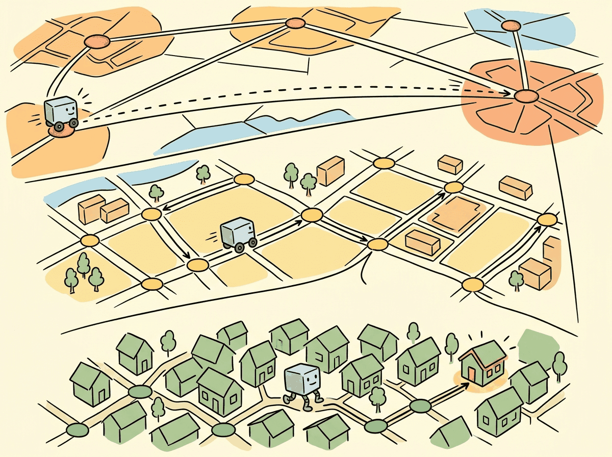

Brute force finds the exact nearest neighbor in a billion vectors. It takes a week. HNSW finds the approximately-nearest one in 800 microseconds. Most users cannot tell the difference, and nobody waits a week.
Vec, Approximate-and-Proud AI Agent
Finding the most similar vectors in a collection of millions is a computational challenge that brute-force search cannot solve at scale. Approximate Nearest Neighbor (ANN) algorithms trade a small amount of accuracy for dramatic speedups, enabling sub-millisecond search over billions of vectors. Understanding the internals of HNSW, IVF, and Product Quantization is essential for configuring vector indexes that meet your application's latency, recall, and memory requirements. Building on the embedding models from Section 31.1, this section provides a deep, implementation-level understanding of the algorithms that power every vector database.
Prerequisites
Before diving into vector indexing algorithms, make sure you are comfortable with the embedding similarity concepts from Section 31.1, particularly cosine similarity and inner product distance metrics. An intuitive understanding of tree-based data structures and graph traversal will help, though the section builds these concepts from first principles. The discussion of approximate search tradeoffs connects directly to the inference optimization strategies covered in Section 9.1.

31.3.1 The Nearest Neighbor Problem
The word "product" is doing real work here. Splitting a 768-dim vector into 96 subspaces of 8 dims each, with 256 centroids per subspace, gives an effective codebook size of 25696 ≈ 10231, while only 96 × 256 = 24,576 centroids ever need to be trained. This is the same Cartesian-product-of-small-codebooks trick that compressed video codecs use.
Why does this work mathematically? Jegou, Douze, and Schmid (2011) showed that distances in Rd approximately decompose across orthogonal subspaces, so squared L2 distance can be computed as a sum of m table lookups instead of d multiplications. The "asymmetric distance computation" trick refines this further by keeping the query in full precision while only quantizing the database.
Without that decomposition, brute-force k-means in 768 dimensions would need an absurd number of centroids to cover the space. Product quantization sidesteps the curse of dimensionality by quantizing each subspace independently.
A multi-layer graph gives O(log N) search for the same reason a skip list does: each higher layer acts as an express lane that halves the expected number of hops.
The formal result (Malkov and Yashunin, 2018) is that assigning layers by a geometric distribution with parameter 1/ln(M) turns the graph into a navigable small-world network. This is Milgram's "six degrees of separation," formalized. The small-world property guarantees that the nearest neighbor on any upper layer is close enough to the true nearest neighbor on layer 0 to serve as a good entry point for the next layer's greedy descent.
Two parameters control the construction: M sets the in-degree of each node, and ef_construction controls how thoroughly each layer is built. Once those are set, the log factor falls out for free.
HNSW assigns each new node a maximum layer drawn from an exponential distribution: $m_L = 1/\ln(M)$, and the layer is floor(-ln(random()) * m_L). This produces:
So each layer has roughly $1/M$ of the nodes in the layer below it (on average). For $M = 16$ and 100,000 vectors: ~94% on layer 0, ~6% on layer 1, ~0.4% on layer 2, ~0% on layer 4+. The greedy search-from-the-top guarantees $O(\log N)$ navigation steps because layer count is logarithmic in $N$. Practical implication: increasing $M$ beyond ~64 causes index bloat without recall gain, the marginal upper-layer nodes don't help navigation any more.
Given a query vector q and a collection of N vectors in d dimensions, the k-nearest neighbor (k-NN) problem asks for the k vectors most similar to q. The brute-force solution computes the distance between q and every vector in the collection, then returns the top k. This requires $O(N \times d)$ operations per query, which becomes prohibitive as N grows into the millions.
# Brute-force k-NN search with NumPy
import numpy as np
import time
def brute_force_knn(query, vectors, k=10, metric="cosine"):
"""
Exact nearest neighbor search.
query: (d,) vector
vectors: (N, d) matrix
Returns: indices of k nearest neighbors and their distances
"""
if metric == "cosine":
# For normalized vectors, cosine similarity = dot product
similarities = np.dot(vectors, query)
# Higher similarity = more similar, so negate for argsort
top_k_indices = np.argsort(-similarities)[:k]
top_k_distances = similarities[top_k_indices]
elif metric == "l2":
distances = np.linalg.norm(vectors - query, axis=1)
top_k_indices = np.argsort(distances)[:k]
top_k_distances = distances[top_k_indices]
return top_k_indices, top_k_distances
# Benchmark at different scales
dim = 768
for n_vectors in [10_000, 100_000, 1_000_000]:
vectors = np.random.randn(n_vectors, dim).astype(np.float32)
vectors /= np.linalg.norm(vectors, axis=1, keepdims=True)
query = np.random.randn(dim).astype(np.float32)
query /= np.linalg.norm(query)
start = time.time()
indices, distances = brute_force_knn(query, vectors, k=10)
elapsed = time.time() - start
print(f"N={n_vectors:>10,}: {elapsed*1000:.1f}ms")The same brute-force search can be expressed in three lines with FAISS, which also provides a seamless upgrade path to approximate indexes:
# Library shortcut: brute-force kNN with FAISS (pip install faiss-cpu)
import faiss, numpy as np
dim, k = 768, 10
vectors = np.random.randn(1_000_000, dim).astype(np.float32)
faiss.normalize_L2(vectors) # in-place normalize for cosine similarity
index = faiss.IndexFlatIP(dim) # exact inner-product search
index.add(vectors)
distances, indices = index.search(vectors[:1], k) # query the first vector
print(f"Top-{k} indices: {indices[0]}")
# To switch to approximate search, replace IndexFlatIP with IndexHNSWFlat.At one million vectors with 768 dimensions, brute-force search takes nearly 200ms per query. For real-time applications that need sub-10ms latency (the kind of constraint explored in Chapter 9 on inference optimization), this is unacceptable. This motivates the use of Approximate Nearest Neighbor (ANN) algorithms, which build index structures that enable much faster search at the cost of occasionally missing the true nearest neighbor.
The "curse of dimensionality" means that in high-dimensional spaces, the distance between the nearest and farthest neighbor converges. In 768 dimensions, all points are roughly the same distance from each other, which is exactly why brute-force search still kind of works and why ANN algorithms have to be surprisingly clever.
Measuring ANN Quality: Recall@k
The standard quality metric for ANN algorithms is recall@k: the fraction of true k-nearest neighbors that appear in the ANN algorithm's top-k results. A recall@10 of 0.95 means that on average, 9.5 of the 10 returned results are actual top-10 nearest neighbors. For most RAG applications, recall@10 above 0.95 is sufficient.
31.3.2 HNSW: Hierarchical Navigable Small World Graphs
HNSW is the most widely used ANN algorithm in production vector databases. It builds a multi-layer graph where each vector is a node, and edges connect vectors that are close to each other in the embedding space. The graph is navigable: starting from any node, you can reach any other node by following a short path of edges, and greedy traversal (always moving to the neighbor closest to the query) finds excellent approximate nearest neighbors.
Graph Construction
Start with M=16 and ef_construction=200 as sensible defaults for most workloads. If your recall@10 is below 0.95, increase M before increasing ef_construction. Doubling M doubles memory usage but also dramatically improves recall. Think of M as the graph's "connectedness budget" and ef_construction as the "build-time quality budget."
HNSW builds the graph incrementally. When a new vector is inserted, it is assigned a random maximum layer according to an exponential distribution. The algorithm then searches for the nearest neighbors of the new vector at each layer and connects them with bidirectional edges. Two parameters control the graph structure: illustrates the multi-layer graph structure of HNSW.
- M (max edges per node): Controls the graph connectivity. Higher M means more edges per node, which improves recall but increases memory usage and insertion time. Typical values range from 16 to 64.
- ef_construction (search width during build): Controls how thoroughly the algorithm searches for neighbors during insertion. Higher values produce a better graph but slow down construction. Typical values range from 100 to 400.
The aha: a naive nearest-neighbor search through 10M vectors takes 10M comparisons. HNSW gets log(10M) which is roughly 23. The trick is exactly the same as skip lists or B-trees: pay extra memory upfront (for the "express lane" edges in upper layers) so that each hop covers exponentially more ground than a flat linear scan. The hierarchical layers are not a clever indexing structure for embeddings; they are a generic algorithmic pattern (logarithmic-depth ladder over a linear search) borrowed from 1990s data structures and applied to high-dimensional spaces. The reason it works at all in 768-d is that nearby points really are topologically close: the embedding's small-world property (most points have a short greedy path to most others) is what makes the local-search-after-descent step return correct neighbors.
Search Algorithm
At query time, HNSW search begins at the top layer's entry point and greedily navigates toward
the query vector. At each layer, it finds the closest node, then descends to the same node in the
layer below. At the bottom layer (layer 0, which contains all vectors), it performs a more thorough
local search controlled by the ef_search parameter. Higher ef_search
values explore more candidates, improving recall at the cost of latency.
Algorithm: HNSW SEARCH-KNN
Input: query q, multi-layer HNSW graph H with layers L_max .. 0,
entry point ep at layer L_max, beam width ef, return count k
Output: top-k approximate nearest neighbors of q
// 1. Coarse descent: greedy walk on every upper layer
current := ep
For lc = L_max .. 1:
current := SEARCH-LAYER-GREEDY(q, current, layer = lc)
// greedy means: at each step move to the neighbor closer to q;
// stop when no neighbor improves distance(q, .)
// 2. Beam search on the dense bottom layer (layer 0)
W := SEARCH-LAYER-BEAM(q, current, layer = 0, ef = ef)
// maintains a min-heap of size ef ordered by distance(q, .)
// explores neighbors of the best frontier node until no improvement
// 3. Truncate to k
Return k closest elements of W (by distance to q)
SEARCH-LAYER-BEAM(q, entry, layer, ef):
visited := {entry}
candidates := MinHeap({entry}, key = distance(q, .)) // frontier
W := MaxHeap({entry}, key = distance(q, .)) // top-ef so far
While candidates is not empty:
c := candidates.pop_min()
if distance(q, c) > distance(q, W.peek_max()):
break // no improvement possible
For neighbor n in graph_layer[c]:
if n in visited: continue
visited.add(n)
if distance(q, n) < distance(q, W.peek_max()) or |W| < ef:
candidates.push(n)
W.push(n)
if |W| > ef: W.pop_max()
Return W
Complexity. Query time O(log N) expected on small-world graphs; per-layer hops scale
with the local degree M (typical 16..64), so total work per query is O(ef * M * log N).Source: Malkov and Yashunin, "Efficient and robust approximate nearest neighbor search using Hierarchical Navigable Small World graphs," IEEE TPAMI 2020 (arXiv:1603.09320). The log-N behavior comes from the exponential layer-assignment distribution combined with the small-world property: long edges in upper layers make large jumps, short edges in layer 0 do the final refinement. Production engines (FAISS HNSWFlat, Lucene HNSW, Qdrant, Weaviate) all implement variants of this search.
# HNSW index with FAISS
import faiss
import numpy as np
import time
dim = 768
n_vectors = 1_000_000
# Generate random normalized vectors
np.random.seed(42)
vectors = np.random.randn(n_vectors, dim).astype(np.float32)
faiss.normalize_L2(vectors)
query = np.random.randn(1, dim).astype(np.float32)
faiss.normalize_L2(query)
# Build HNSW index
# M=32: each node connected to ~32 neighbors
# ef_construction=200: search width during build
index = faiss.IndexHNSWFlat(dim, 32)
index.hnsw.efConstruction = 200
print("Building HNSW index...")
start = time.time()
index.add(vectors)
build_time = time.time() - start
print(f"Build time: {build_time:.1f}s")
print(f"Memory: ~{index.ntotal * dim * 4 / 1e9:.2f} GB (vectors only)")
# Search with different ef values to show recall/latency tradeoff
for ef_search in [16, 64, 256]:
index.hnsw.efSearch = ef_search
start = time.time()
distances, indices = index.search(query, k=10)
search_time = (time.time() - start) * 1000
print(f"ef_search={ef_search:>3}: {search_time:.2f}ms, "
f"top result idx={indices[0][0]}")The layer-assignment rule that governs how often a vector lands on each layer can be written compactly as:
which produces the geometric tail $\Pr[\ell \geq k] \approx M^{-k}$. The expected number of layers therefore grows as $\log_M N$, and the greedy descent visits a constant number of nodes per layer, which is the source of the overall $O(\log N)$ query complexity.
Consider an index with $N = 100{,}000$ vectors and $M = 16$, so the expected layer counts are roughly 94,000 on layer 0, 5,900 on layer 1, 370 on layer 2, and 23 on layer 3. The entry point sits on layer 3.
A query vector $q$ arrives. The search proceeds top-down:
- Layer 3 (greedy). Start at entry node $e$ with $d(q, e) = 0.81$. Its 4 neighbors on this layer have distances $\{0.74, 0.92, 0.66, 0.88\}$. Move to the best (0.66). That node's neighbors give $\{0.71, 0.69, 0.66, 0.72\}$, no improvement, so layer 3 terminates with $d = 0.66$.
- Layer 2 (greedy). Descend to the same node on layer 2. Now it has 12 neighbors with distances $\{0.62, 0.59, 0.71, 0.55, 0.68, \ldots\}$. Move to 0.55, then its neighbors give 0.48, then 0.43, then no improvement. Layer 2 terminates with $d = 0.43$.
- Layer 0 (beam, ef = 64). Skip layer 1 in this trace for brevity; the same greedy step ends near $d \approx 0.31$. On layer 0 the search switches to a beam of 64. It visits roughly $64 \times 16 = 1{,}024$ neighbor edges (a thousandth of the corpus), keeps the 10 closest in the result heap, and returns them.
Total work for one query: about $3 + 4 + 1{,}024 \approx 1{,}031$ distance computations, compared with $100{,}000$ for brute force, a roughly 100x speedup with negligible recall loss.
HNSW provides excellent recall and low latency, but it requires storing the full vectors in memory along with the graph structure. For 1 million 768-dimensional float32 vectors, the vectors alone consume ~3 GB. The graph metadata adds another 20 to 50% overhead depending on M. This makes HNSW memory-intensive for very large collections (100M+ vectors), which is where IVF and quantization techniques become essential.
31.3.3 IVF: Inverted File Index
The Inverted File (IVF) index partitions the vector space into nlist regions using k-means clustering. Each vector is assigned to its nearest cluster centroid. At query time, the algorithm first identifies the nprobe closest centroids to the query, then performs an exhaustive search only within those clusters. This reduces the number of distance computations from N to approximately N × nprobe / nlist.
Algorithm: IVF SEARCH-KNN
Input: query q, codebook of centroids C = {c_1, .., c_nlist}, inverted lists
I_1, .., I_nlist (each I_j holds vector IDs assigned to c_j), nprobe, k
Output: top-k approximate nearest neighbors of q
// 1. Coarse quantization: pick the nprobe nearest centroids to q
cand_lists := top_nprobe_argmin_j ||q - c_j||
// 2. Inverted-list scan: exact search within those lists only
H := MaxHeap(size = k, key = distance)
For j in cand_lists:
For id in I_j:
d := distance(q, vectors[id])
If |H| < k or d < H.peek_max():
H.push((id, d))
if |H| > k: H.pop_max()
Return H sorted ascending by d
Construction (offline):
1. Train k-means with K = nlist centers on a sample of the corpus.
2. For each vector v, assign it to argmin_j ||v - c_j||; append v's ID to I_j.
Cost analysis. With N vectors uniformly distributed across nlist cells:
coarse step: compare to nlist centroids => O(nlist * d)
refinement: nprobe * (N / nlist) full distances => O(nprobe * N * d / nlist)
Total speedup over brute force: roughly nlist / nprobe
Typical tuning: nlist = O(sqrt(N)), nprobe = 8..128 trades recall for latency.Source: Jegou, Douze, Schmid, "Product Quantization for Nearest Neighbor Search," IEEE TPAMI 2011 (the IVF + PQ "IVFADC" system, hal.inria.fr/inria-00514462). FAISS IndexIVFFlat is the modern implementation; the variant IndexIVFPQ stores compressed (PQ-encoded) residuals inside each list instead of raw vectors.
IVF Construction
Building an IVF index requires a training phase where k-means clustering is performed on a
representative sample of the data. The number of clusters (nlist) is typically set
to the square root of N, although values between 4×sqrt(N) and 16×sqrt(N) are also
common. More clusters enable more selective search but require more centroids to be compared at
query time.
# IVF index with FAISS
import faiss
import numpy as np
import time
dim = 768
n_vectors = 1_000_000
np.random.seed(42)
vectors = np.random.randn(n_vectors, dim).astype(np.float32)
faiss.normalize_L2(vectors)
query = np.random.randn(1, dim).astype(np.float32)
faiss.normalize_L2(query)
# IVF with flat (uncompressed) storage within each cell
nlist = 1024 # Number of Voronoi cells (clusters)
quantizer = faiss.IndexFlatIP(dim) # Inner product for normalized vectors
index = faiss.IndexIVFFlat(quantizer, dim, nlist, faiss.METRIC_INNER_PRODUCT)
# IVF requires a training step (k-means on the data)
print("Training IVF index...")
start = time.time()
index.train(vectors)
print(f"Training time: {time.time() - start:.1f}s")
# Add vectors to index
start = time.time()
index.add(vectors)
print(f"Add time: {time.time() - start:.1f}s")
# Search with different nprobe values
for nprobe in [1, 8, 32, 128]:
index.nprobe = nprobe
start = time.time()
distances, indices = index.search(query, k=10)
search_time = (time.time() - start) * 1000
print(f"nprobe={nprobe:>3}: {search_time:.2f}ms, "
f"searched {nprobe * n_vectors // nlist:,} vectors")31.3.4 Tree-Based ANN: Annoy Random Projection Forests
HNSW is a graph-based index and IVF is a cell-based index; the third structural family is tree-based, and the canonical implementation is Annoy (Approximate Nearest Neighbors Oh Yeah, Spotify, 2015). Annoy builds a forest of random projection trees: each tree picks two random vectors at every node, draws the perpendicular bisector between them, and recursively partitions the dataset by which side of that hyperplane each vector falls on. The leaves contain small clusters of nearby vectors. At query time the algorithm descends each tree to the leaf containing the query, unions the candidates across all trees, and re-ranks them by exact distance.
The strengths and weaknesses follow directly from the construction. The index is memory-mapped from disk (Annoy was built to serve Spotify's recommendation index without loading it into RAM), so it scales to enormous corpora on small machines. Building is embarrassingly parallel across trees because each tree is independent. Recall is tuned by adding more trees rather than by retraining, which matches a write-once-read-many catalog like a music library. The cost is that updates require rebuilding the whole index (Annoy is immutable after construction) and the per-query latency is higher than HNSW at the same recall level because the algorithm has to descend every tree. The mental map for picking among the three families: choose HNSW for low-latency in-memory search with frequent updates, IVF (often as IVFPQ) for memory-constrained billion-scale search, and Annoy for memory-mapped read-only catalogs where build simplicity and a small dependency footprint matter more than the last 10% of recall.
Graph-based indexes with learned routing are replacing static HNSW configurations with neural network-guided neighbor selection, improving recall at the same latency budget. Hybrid quantization combines product quantization with scalar quantization at different index levels, achieving near-exact recall at 16x compression. GPU-accelerated ANN search libraries like RAFT (NVIDIA) and cuVS are moving index construction and search onto GPUs, enabling sub-millisecond queries on billion-scale datasets. Research into streaming index updates addresses the challenge of maintaining index quality as documents are continuously added and deleted, a key limitation of batch-built HNSW graphs.
- Brute-force search scales linearly with dataset size and becomes impractical beyond ~50K vectors for real-time applications.
- HNSW provides the best recall/latency tradeoff but requires storing full vectors in memory, making it memory-intensive.
- IVF partitions the search space using clustering, reducing the number of comparisons proportional to the
nprobe/nlistratio. - Product Quantization compresses vectors by 16 to 32x, enabling large-scale search in constrained memory environments at the cost of some recall.
- Composite indexes (IVF-PQ, IVF-HNSW-PQ) combine partitioning, graph navigation, and compression for billion-scale search.
- Always benchmark on your data. The optimal index type and parameters depend on your specific dataset size, dimensionality, query patterns, and latency/recall requirements.
- FAISS index factory provides a convenient string-based interface for constructing and experimenting with different composite index configurations.
Show Answer
Show Answer
Show Answer
Show Answer
Show Answer
Exercises
If brute-force nearest neighbor search over 1 million 768-dimensional vectors takes 200ms, estimate the time for 100 million vectors. Why is this unacceptable for production search?
Show Answer
At 100x the vectors, brute-force takes approximately 20 seconds per query. Production search APIs require sub-100ms latency, making brute-force infeasible beyond a few million vectors.
Explain how the hierarchical structure of HNSW speeds up search. What role do the upper layers play, and why is a logarithmic number of layers sufficient?
Show Answer
Upper HNSW layers contain only a sparse subset of nodes, allowing the search to quickly navigate to the right region of the graph. Lower layers are dense and provide local refinement. The log(N) layers mirror a skip-list structure, giving $O(\log N)$ search complexity.
In an IVF index with 1024 clusters, you set nprobe=10. Approximately what fraction of vectors are scanned? What happens to recall if you increase nprobe to 100?
Show Answer
With nprobe=10 out of 1024 clusters, about 1% of vectors are scanned. Increasing to nprobe=100 scans about 10%, significantly improving recall (often from 85% to 98%+) at the cost of 10x more computation.
A Product Quantization index splits 768-dimensional vectors into 96 sub-vectors of 8 dimensions each, with 256 centroids per sub-vector. Calculate the compressed size per vector in bytes. What is the compression ratio compared to storing raw float32 vectors?
Show Answer
96 sub-vectors with 1 byte each (256 centroids = 8 bits) = 96 bytes per vector. Raw float32: 768 * 4 = 3072 bytes. Compression ratio: 3072 / 96 = 32x.
Explain why combining IVF with PQ (IVF+PQ) is more effective than using either alone. What does each component contribute to the overall system?
Show Answer
IVF partitions the search space, reducing the number of vectors to scan. PQ compresses each vector, reducing memory and enabling faster distance computation. Together, IVF handles coarse search and PQ handles fine-grained comparison within each partition.
Generate 100,000 random 128-dimensional vectors. Build a flat index (brute-force), an HNSW index, and an IVF index. Compare query latency and recall@10 across all three.
Build an IVF index with 256 clusters on 500,000 random vectors. Measure recall@10 and query time as you sweep nprobe from 1 to 128. Plot the recall/latency tradeoff curve.
Use FAISS index factory strings to build "IVF256,PQ32", "IVF256,Flat", and "HNSW32" indexes on 1 million random vectors. Compare memory usage, build time, query latency, and recall.
Write a function that, given vector dimension, number of vectors, and a FAISS index type string, estimates the total memory footprint. Validate against actual memory usage.
You can now navigate an HNSW graph and search an IVF index. Next we add the compression layer that turns these indexes into billion-vector systems: product quantization, composite indexes, FAISS, and the index selection guide. Continue with Section 31.4: Product Quantization, Composite Indexes, and FAISS.